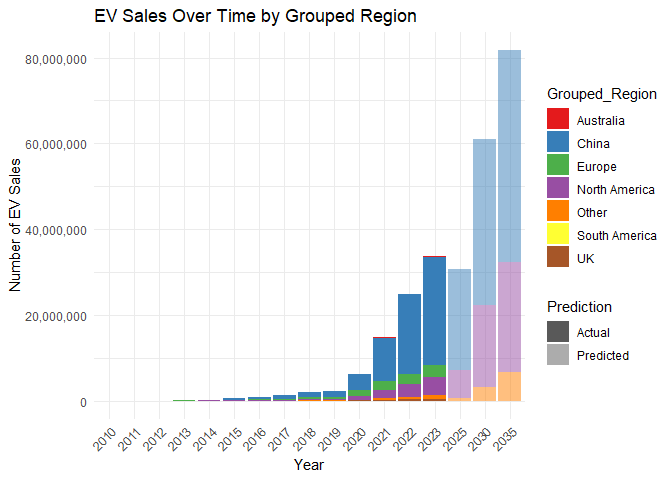

The EVsales package provides tools to explore and analyze global electric vehicle (EV) sales data. It includes functions to visualize EV sales across different regions, powertrain types, and years, as well as explore predicted trends. The package is especially useful for anyone interested in understanding the rise of EV adoption globally.
Installation
You can install the development version of EVsales from GitHub with:
remotes::install_github("ETC5523-2024/assignment-4-packages-and-shiny-apps-xurong980623/EVsales")Example
This is a basic example showing how to explore EV sales data using the package. The following code generates a stacked bar plot of EV sales over time by region.
library(EVsales)
library(ggplot2)
library(tidyverse)
#> ── Attaching core tidyverse packages ──────────────────────── tidyverse 2.0.0 ──
#> ✔ dplyr 1.1.4 ✔ readr 2.1.5
#> ✔ forcats 1.0.0 ✔ stringr 1.5.1
#> ✔ lubridate 1.9.3 ✔ tibble 3.2.1
#> ✔ purrr 1.0.2 ✔ tidyr 1.3.1
#> ── Conflicts ────────────────────────────────────────── tidyverse_conflicts() ──
#> ✖ dplyr::filter() masks stats::filter()
#> ✖ dplyr::lag() masks stats::lag()
#> ℹ Use the conflicted package (<http://conflicted.r-lib.org/>) to force all conflicts to become errors
# Create stacked bar plot for EV sales over time
ev_sales_stacked_plot <- ev_data |>
filter(parameter == "EV sales", Grouped_Region != "World") |> # Corrected filter condition
mutate(prediction_flag = ifelse(year > 2023, "Predicted", "Actual")) |>
mutate(year = as.factor(year)) |>
ggplot(aes(x = year, y = value, fill = Grouped_Region)) +
geom_bar(stat = "identity", position = "stack", aes(alpha = prediction_flag)) +
scale_fill_brewer(palette = "Set1") +
scale_alpha_manual(values = c("Actual" = 1, "Predicted" = 0.5), guide = guide_legend(title = "Prediction")) +
labs(title = "EV Sales Over Time by Grouped Region",
x = "Year",
y = "Number of EV Sales") +
scale_y_continuous(labels = scales::comma) +
theme_minimal() +
theme(axis.text.x = element_text(angle = 45, hjust = 1))
ev_sales_stacked_plot
This plot shows the total EV sales over time, grouped by region. Predicted values are shown with reduced opacity to differentiate them from actual sales data.Main Components
The EVsales package includes several key components:
- Data: Global EV sales data by region, powertrain type, and year (including predicted sales).
- Visualization Functions: Functions to create visualizations of EV sales trends, such as stacked bar charts and time series plots.
- Shiny App: An interactive Shiny app for exploring EV sales data, allowing users to filter by region, powertrain type, and year.
How to Use the Package
- Use the provided functions to explore and visualize the EV sales dataset.
- The Shiny app can be launched using run_app(), offering an interactive interface for users to filter and analyze EV sales data.
- Data cleaning and preprocessing are handled internally to ensure a smooth user experience.
Contributing
I welcome contributions to the EVsales package! If you find any issues or have suggestions, feel free to submit an issue or pull request on GitHub.
References
International Energy Agency. (2024). Global EV outlook 2024. International Energy Agency. https://www.iea.org/reports/global-ev-outlook-2024
Visit the package documentation at:
https://etc5523-2024.github.io/assignment-4-packages-and-shiny-apps-xurong980623/